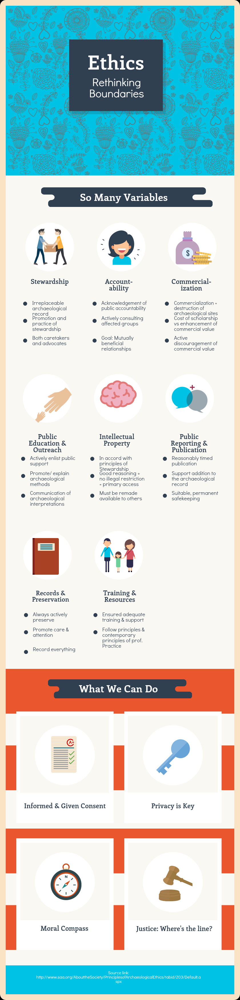

In the city of Victoria, there is an abundance of dark, history! Ethically, all of the spots below have a plentitude of issues and are often hidden from public view. From public hangings to alleged abusive satanic rituals, this city remembers its unethical past!
To further exemplify the issues regarding ethics, the infographic below, displays the many different variables included in ethical debates.
